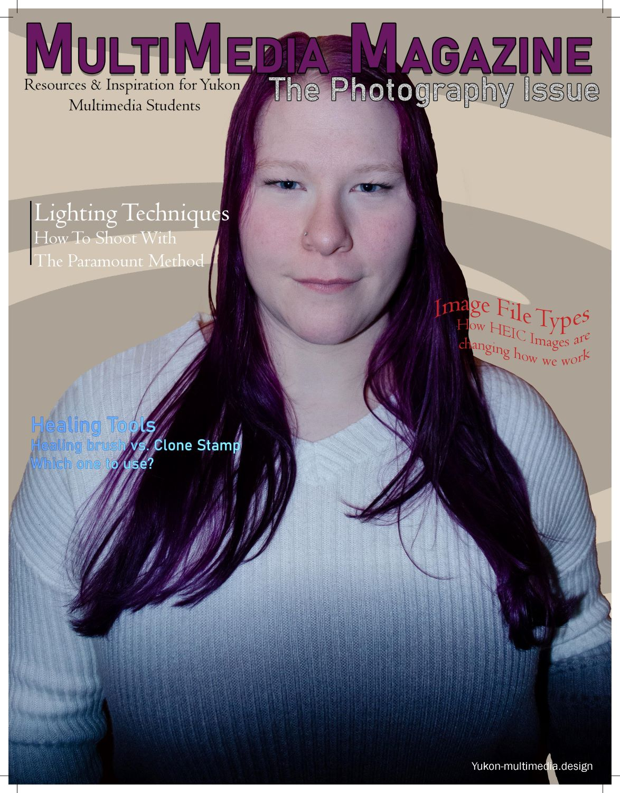
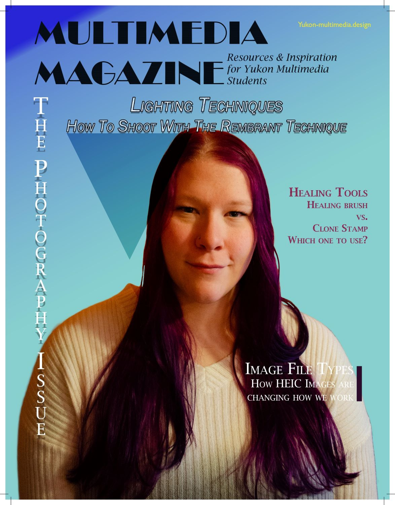
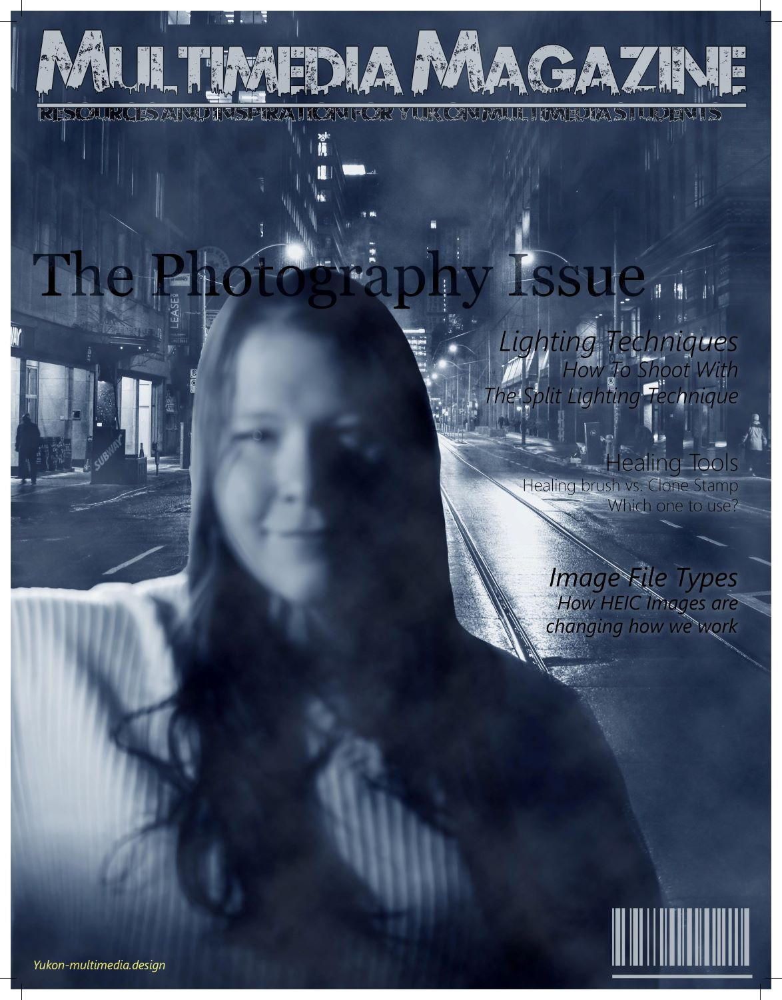

I'm Duncan. I was born in Whitehorse, Yukon and have lived here my whole life. I enjoy reading, listening to (and occasionally creating) music, and playing video games. Please take a look at a selection of my works located above. I have experience in excel and I have recently taken up photography and website design and have taken classes on them at Yukon University. If you would like to reach me for either a photography or website project please send me an email. Thanks for visiting my website.
© 2024 Duncan Snooks.